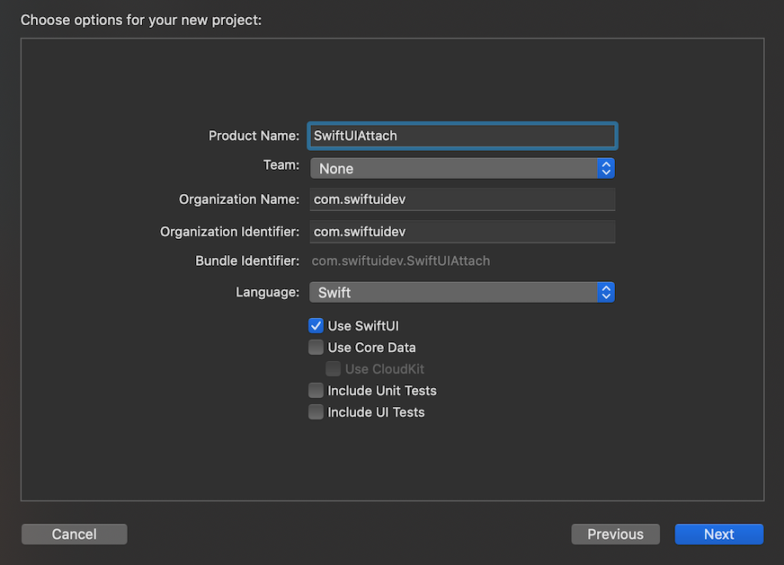
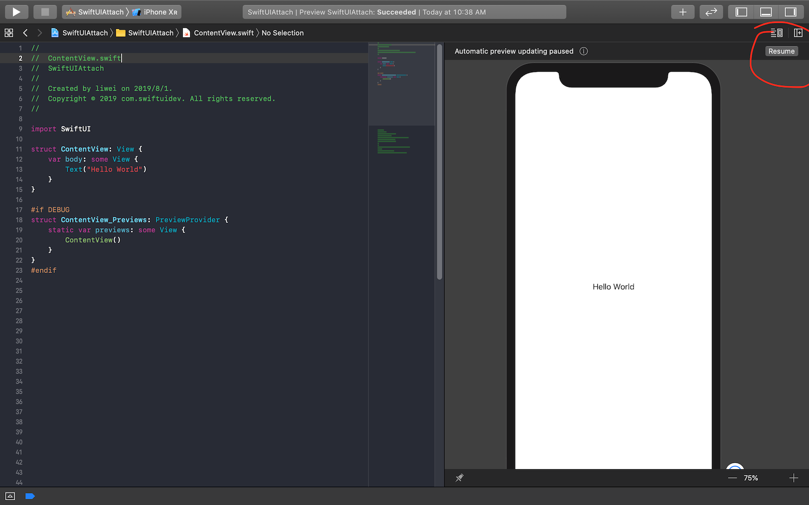
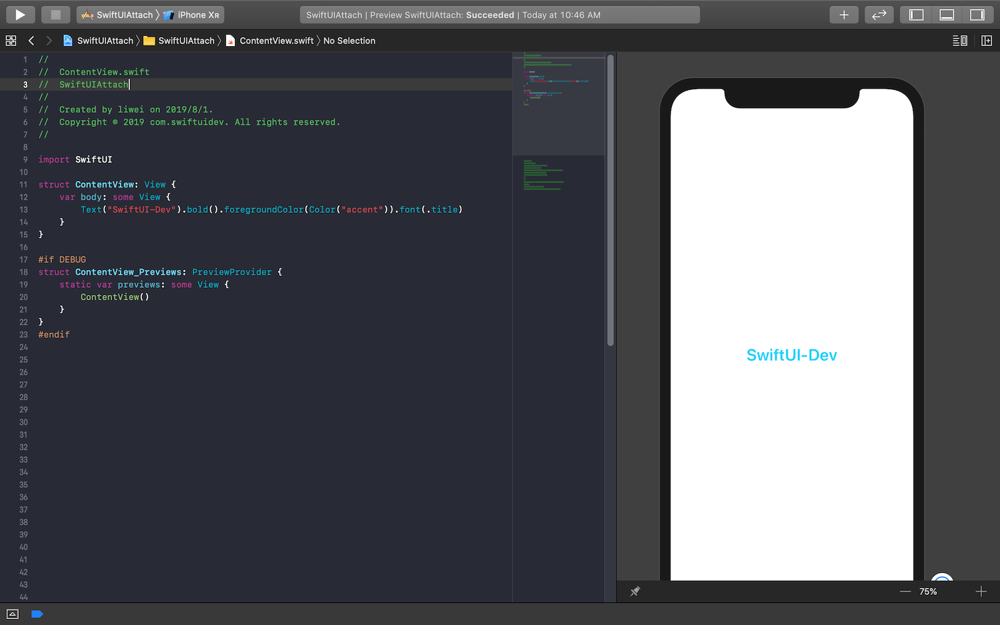
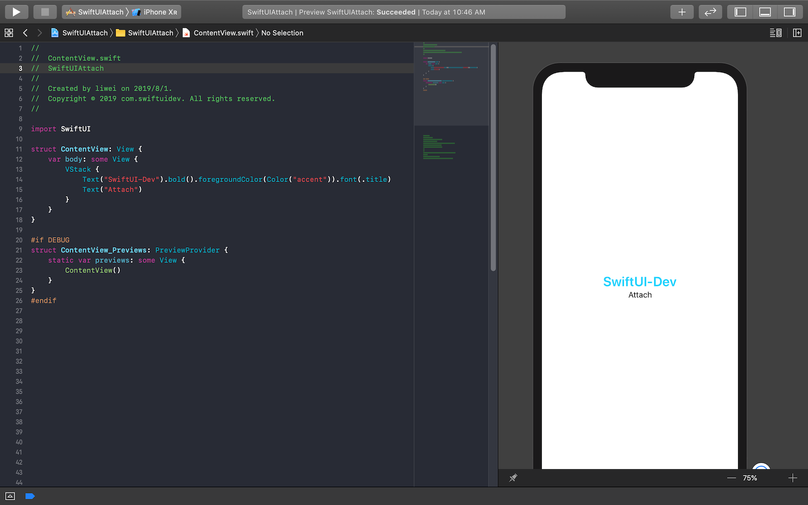
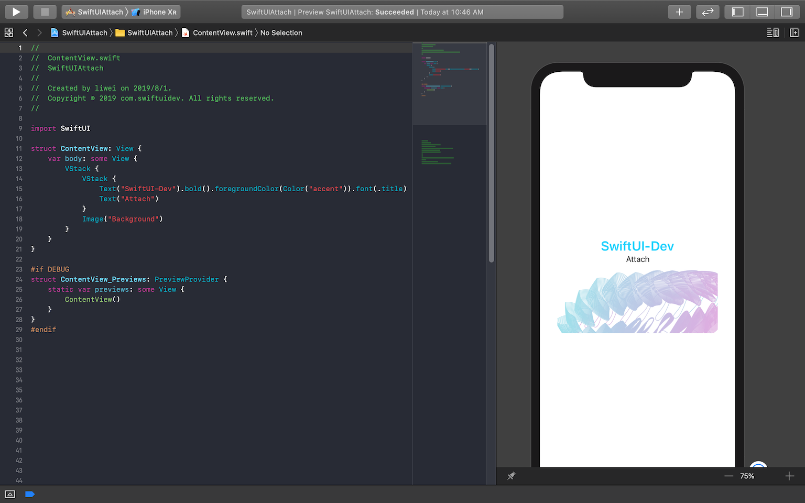
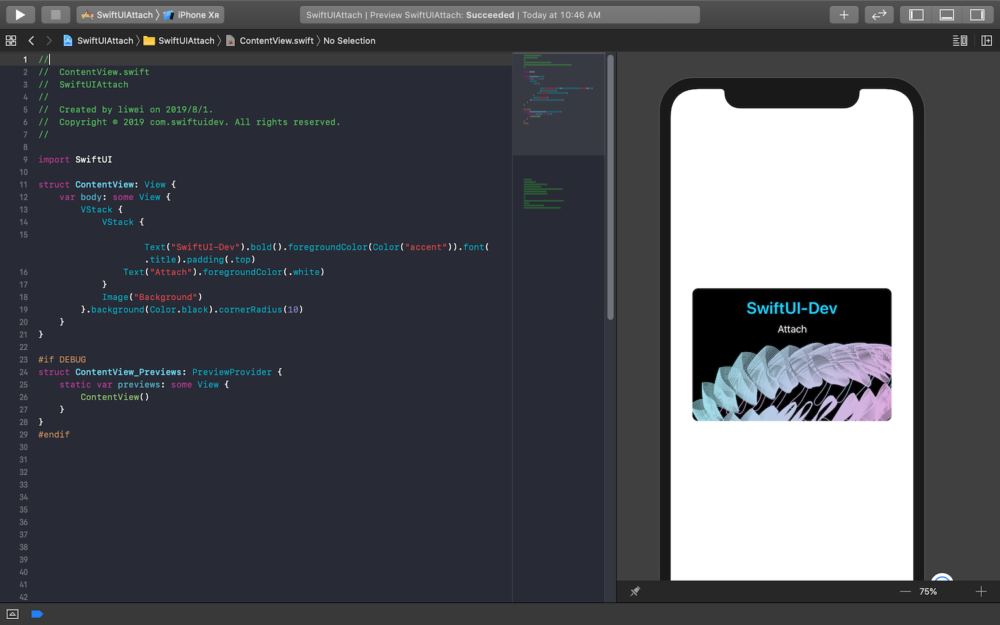

SwiftUI进击的巨人1-创建SwiftUI项目
Page content
要创建一个SwiftUI的应用,步骤和普通的应用创建流程一样,唯一的不同点在于需要选择Use SwiftUI这个选项.如下图一样. 
然后你会看到这个界面,如果出现界面,你可以点击resume按钮刷新一下,就是右上角红色圈住的. 
制作一个卡片布局
Text
Text是SwiftUI提供的文字控件,我们这里修改文字,并设置颜色,粗体.字体样式.

VStack
我们在添加一个Text,这里会使用VStack,这是SwiftUI提供的垂直布局容器,VStack里面的控件按照从上到下的顺序进行排序.

添加一个Image
Image就是一个图片控件.

在添加一个背景颜色,边框圆角,这个Card就完成了. 